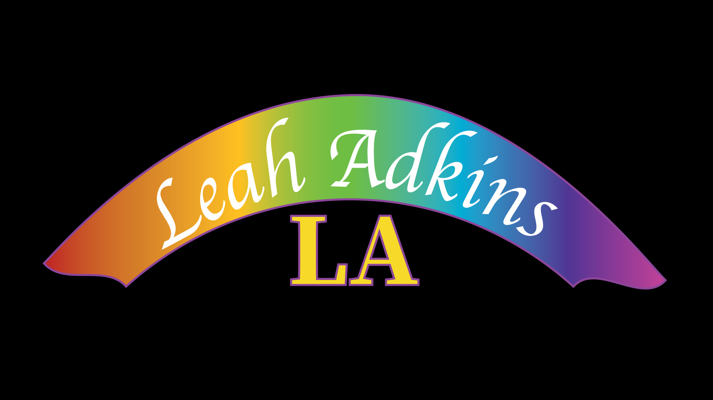

I am studying Digital Media Design: Web Design Pathway at Sinclair Community College. I was drawn to this field probably because my love of design, technology, animation, and all things art. Over the course of my life, I’ve learned that there is this common phenomenon where people are drawn towards things that look appealing and pleasing to the eye. I approach my work by considering what people should expect from any form of design and what I myself could offer as a designer. As a fellow consumer, I believe that users or clients shouldn’t have to settle for bottom of the barrel designs, because design at the end of the day is art. After finishing college, I want to start a career in creative design and make impactful and meaningful art for a variety of projects.
May 2023 - September 2024
Greeted and provided customers with high-quality service
Accurately processed cash and digital transactions in a fast-paced environment
November 2025 - Present
Collaborated with kitchen staff to maintain during peak hour
How Tomorrow Might Look explores the theory of what web design and, more specifically, websites, will resemble in the future. Webpages and websites have come a long way since the early days of the internet. Gone are the crazy colors, small texts, and odd alignments. Now, with user interface and user experience, web design is simpler, more professional, and easier to understand. But with AI on the horizon, our theories of what expected websites could look like are bleak. Which is why recognizing our history is important when it comes to approaching the future, and I intend on keeping these ideals in mind as I look forward to a career in this field.
Valley View High School, Germantown, OH - High School Degree September 2020 - May 2024 Community College, Germantown OH - Associates Degree August 2024 - Present Digital Media Design, Tartan Tops, Design Processes, Web Dev HTML & CSS, Web Design
leah.adkins2@sinclair.edu